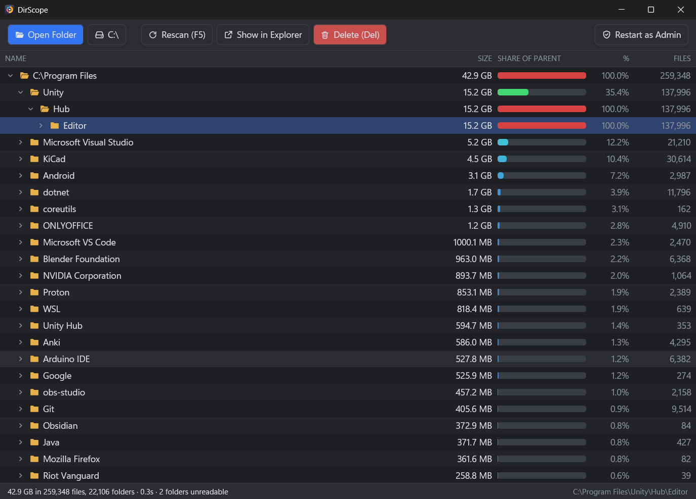

See what's filling your disk. Then delete it.
DirScope scans a drive with every CPU core and lists every folder biggest first, so the space hogs are always at the top.
Version 1.0.0. Free and open source under the MIT license.
Built for the moment your drive turns red
Open it, press your drive, and the answer is on screen before you've finished wondering where the space went.
-
Fast, parallel scanning
Every core walks the folder tree at once. Live counters show files, folders and bytes as they're found, and Esc stops a scan early.
-
Biggest first, everywhere
Each level is sorted by size, with a bar and a percentage showing how much of its parent folder it takes up.
-
Delete without rescanning
Send something to the Recycle Bin or delete it for good. Every parent folder's total updates on the spot.
-
Sees the protected folders too
On Windows, DirScope offers to restart as administrator so Program Files, Windows and other users' folders are counted in full.

Keep your hands on the keyboard
Every action has a key, so you can work down a full drive without reaching for the mouse.
| ↑↓ PgUpPgDn | Move through the list |
| →← | Open or close a folder, or jump to its first item or its parent |
| Enter or double-click | Open or close the selected folder |
| Del | Delete the selected item (asks first) |
| F5 | Scan again (scans C:\ if nothing is open yet) |
| Ctrl O | Choose a folder to scan |
| Esc | Stop the current scan |
Build it yourself
DirScope is written in Rust with gpui, the UI framework behind the Zed editor.
You need a recent stable Rust toolchain. On Debian or Ubuntu, install the system libraries first:
sudo apt install pkg-config libxkbcommon-dev libxkbcommon-x11-dev \ libwayland-dev libfontconfig1-dev libfreetype6-dev libx11-xcb-dev \ libxcb1-dev libvulkan-dev libssl-dev libzstd-dev
Then clone and run it:
git clone https://github.com/rft0/dirscope cd dirscope cargo run --release